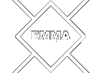
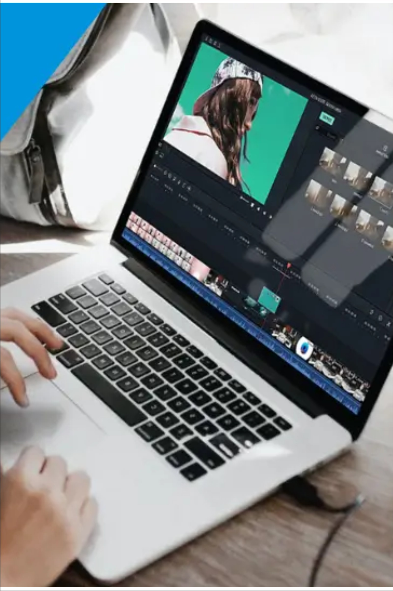
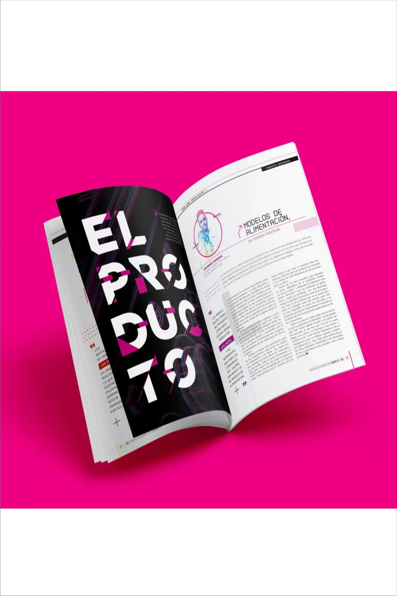
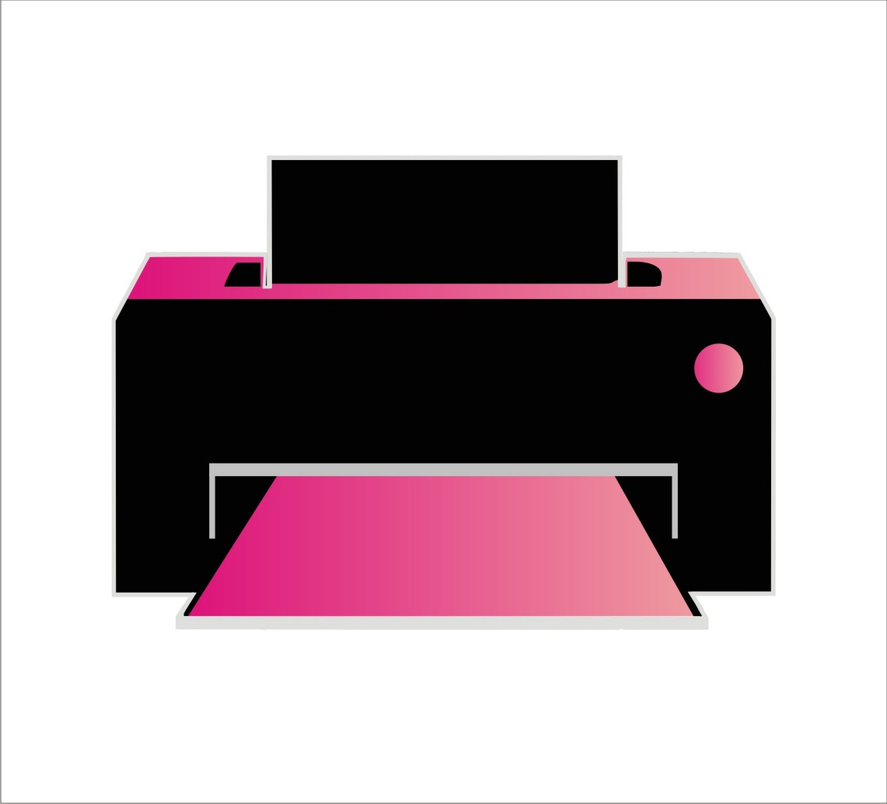
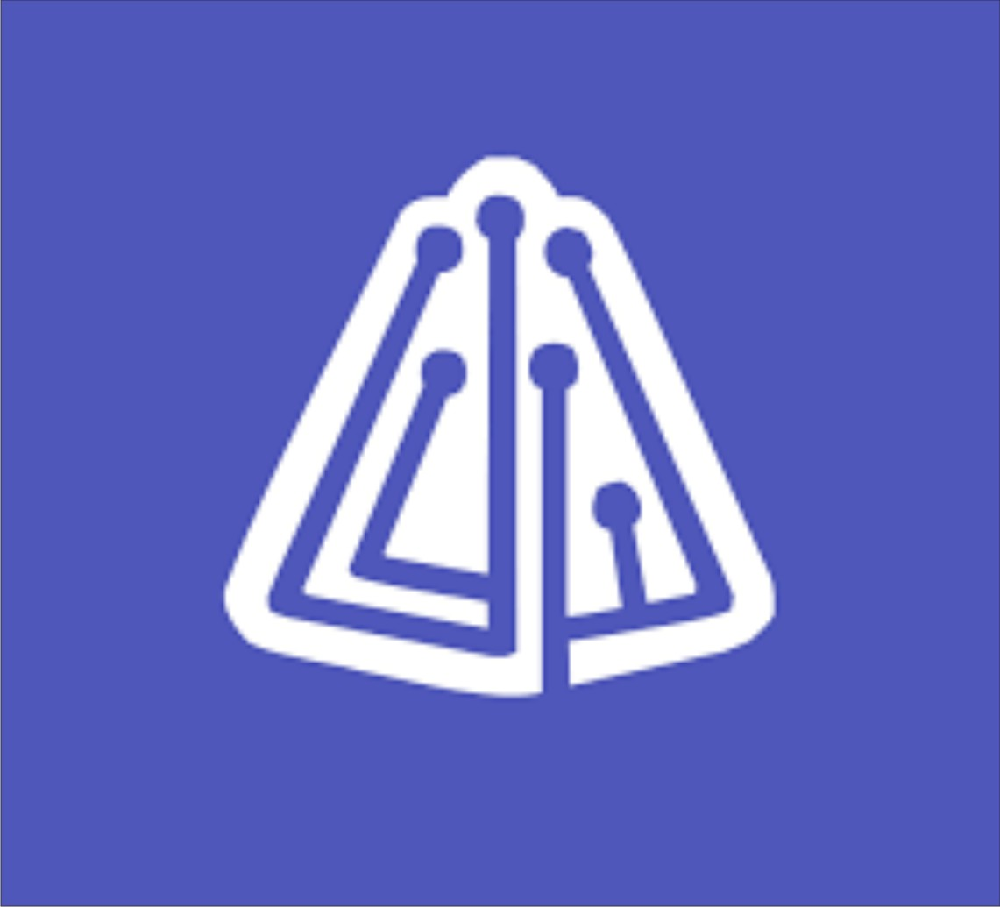

Bienvenidos
Explora mi mundo
Compromiso y Responsabilidad
Cada proyecto es para mí una oportunidad para seguir creciendo de manera profesional, combinando responsabilidad y enfoque
Comunicación y colaboración
La comunicación es clave para transformar ideas en soluciones que representen la identidad de cada trabajo.

Calidad Profesional
Cuido cada detalle del diseño para lograr piezas visuales claras y profesionales, priorizando el mensaje antes que la estética.
Diseño y experiencia digital
Integro diseño gráfico y desarrollo web para crear proyectos digitales modernos, funcionales y visualmente atractivos para el usuario.
SOBRE MÍ
Me dedico a diseñar con propósito
Diseño
Comencé en el mundo del diseño hace más de una década, trabajando con herramientas como CorelDRAW y Adobe Photoshop. Actualmente desarrollo mis proyectos utilizando principalmente la suite de Adobe.
Desarrollo Web
Desde hace tres años complementé mi perfil como diseñador con especializaciones del Informatorio en desarrollo web, incorporando JavaScript, HTML y CSS para crear proyectos que integran diseño y programación
Fotografía
Siguiendo los pasos de mi padre, durante siete años me desempeñé como fotógrafo de eventos en Avia Terai y localidades cercanas, desarrollando una fuerte sensibilidad por la composición y la narrativa visual.
Marketing Digital
Buscando impulsar mi emprendimiento, hace poco decidí profundizar mis conocimientos en marketing digital, aplicando estrategias de comunicación y promoción. para fortalecer su presencia y alcance en las redes
Áreas de servicio
Como Profesional
Trabajos Entregados
Clientes
Proyectos Impresos
Horas de Trabajo
Mates Amargos
Carta de Recomendación
Reconocimiento profesional que avala mi desempeño y dedicación en el área del diseño.
Mis Intereses
Algunas de las actividades que realizo en mi tiempo libre
AJEDREZ
AJEDREZ
2024-Act
El ajedrez es una de las actividades que practico en mi tiempo libre y que contribuye al desarrollo del pensamiento estratégico, la concentración y la capacidad de análisis. A través de este juego se fortalecen habilidades como la planificación, la toma de decisiones y la resolución de problemas, aspectos que también resultan valiosos en los procesos creativos y profesionales.

EDICIÓN DE VIDEO
EDICIÓN DE VIDEO
2022-Act
La edición audiovisual también es una de mis actividades favoritas fuera del ámbito académico, también la llevo a cabo para hacer publicidad de mi emprendimiento. Disfruto trabajar con imágenes, sonido y narrativa visual para construir historias y transmitir ideas a través de recursos audiovisuales.

DISEÑO EDITORIAL
DISEÑO EDITORIAL
2024-Act
El diseño editorial es uno de los campos que más me gusta dentro del diseño gráfico. Me interesa especialmente la organización visual del contenido, la maquetación y la creación de publicaciones que integren tipografía, imagen y narrativa de manera armoniosa.
ESCRITURA
ESCRITURA
2024-Act
La escritura es un espacio de expresión personal y reflexión. A través de ella desarrollo ideas, relatos y proyectos vinculados a la cultura, la historia local y la comunicación, fortaleciendo mis habilidades narrativas.
Un vistazo a mi recorrido profesional más importante
Experiencia Laboral
-
2016
-
24 de Marzo
Atención al Cliente & Diseño
Durante 8 años formé parte del negocio familiar M.S. Producciones y Soluciones Digitales, trabajando en atención al cliente y desarrollando diseños gráficos básicos en CorelDRAW, junto con edición y retoque fotográfico en Adobe Photoshop, hasta el año 2024.
-
2017
-
Fotografía de Eventos
5 de Julio
Me desempeñé como fotógrafo independiente durante 7 años, etapa que concluí en 2024 para enfocarme en mi desarrollo profesional en el diseño.
-
2021
-
21 de Agosto
"MAGENTA PRINT"

Desde hace cinco años llevo adelante mi emprendimiento Magenta Print, enfocado en diseño gráfico y soluciones de impresión, desarrollando proyectos visuales para diversos clientes de Avia Terai.
-
2023
-
DISEÑO GRÁFICO Y DIGITAL
26 de Abril
Con el propósito de fortalecer mi formación profesional, en 2023 inicié la Tecnicatura Superior en Diseño Gráfico y Digital, carrera de la cual culmine satisfactoriamente en el año 2025.
-
07 Marzo
Introducción a la programación

En paralelo, en 2023 inicié mi formación en desarrollo web en el programa Informatorio, finalizada en 2024 tras completar cinco cursos que me permitieron desarrollar diversos proyectos personales y aplicar estos conocimientos en mi práctica actual.
-
2023
PROYECTOS DESTACADOS
Como Profesional Creativo
CONTACTO
Emmanuel Alejandro Sandoval
Dirección
Avia Terai, Chaco
Teléfono
+54 9 3644-701492
Correo
emmanuelsandoval3@gmail.com